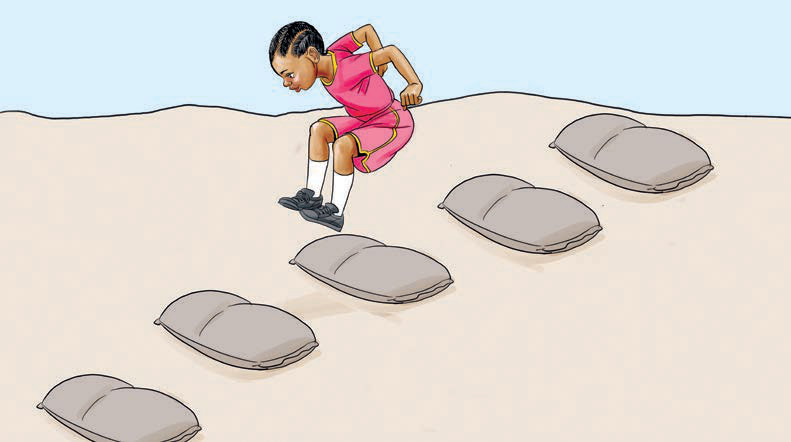

How to play hurdles using sand bags
1.
Arrange sand bags in a straight line on the playground.
2.
There should be an equal space between bags.

3.
Each player stands at the back of one lane.
4.
When the whistle blows, each player starts jumping over the sand bags one after the other.
5.
Each player must jump over all bags one after another.
Each player should jump over the bags in his or her lane.
6.
If a player steps on a sandbag, he or she will be out of the game.